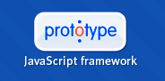

|
Introduction |
|

PROTOTYPE 1.5.1 RC1 API DOCUMENTATION
Welcome to the API documentation for Prototype. The left column contains the main sections. When you activate a section, its detailed contents then appears at the top of the column.
We are doing our best to provide you with current, clear, example-rich documentation. The goal here is that you should, when reading it, get the same warm, fuzzy feeling as we do when using Prototype :-)
The API documentation is a reference documentation. If you need to learn how to use Prototype, or to acquire skills in a particular feature area, have a look at the Learn section, which is accessible from the top of all pages (the “Tips and Tutorials” link), and is also linked from the orange bar in all reference pages. Documentation in the Learn section is more narrative, tutorial-style.
Enjoy the docs!
About the file
This CHM is a reformatted and slightly different organized version of the original documentation made by many and available online at www.prototypejs.org/api. This file was compiled, marked up and is maintained by Kjell Bublitz.
Last Updated: 03/20/2007
Download, more docs and news at:
|
Prototype API 1.5.0 - prototypejs.org